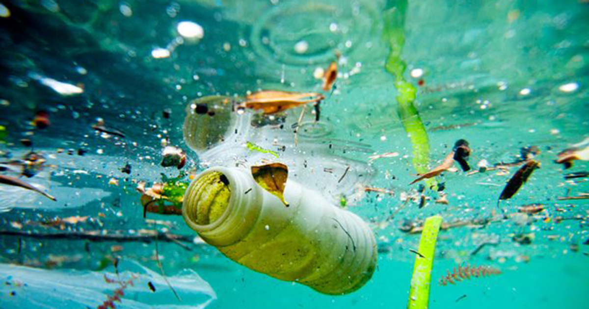

Breaking News
🌱 Brazil Sets Record for Renewable Energy Generation
 In May 2025, Brazil reached a historic milestone by generating over 90% of its electricity from renewable sources such as hydroelectric,
solar, and wind power. Experts say continued investment in clean technologies is making the country a global leader in sustainable energy.
The next goal is to expand the use of these sources to remote areas and ensure an even greener future.
In May 2025, Brazil reached a historic milestone by generating over 90% of its electricity from renewable sources such as hydroelectric,
solar, and wind power. Experts say continued investment in clean technologies is making the country a global leader in sustainable energy.
The next goal is to expand the use of these sources to remote areas and ensure an even greener future.
🌳 Reforestation Project Plants 1 Million Trees in the Amazon
 An environmental project launched in 2023 reached an ambitious goal this week: planting 1 million trees in the Amazon region. Led by NGOs and local communities, the initiative aims to restore degraded areas and preserve biodiversity. According to organizers, the reforestation effort is already attracting native species of flora and fauna back to the area, showing promising results for the ecosystem.
An environmental project launched in 2023 reached an ambitious goal this week: planting 1 million trees in the Amazon region. Led by NGOs and local communities, the initiative aims to restore degraded areas and preserve biodiversity. According to organizers, the reforestation effort is already attracting native species of flora and fauna back to the area, showing promising results for the ecosystem.
🌊 Scientists Find Microplastics in Deep Waters of the Atlantic Ocean

A new study has found microplastics more than 5,000 meters deep in the Atlantic Ocean. Scientists warn that these particles—mainly from packaging and synthetic clothing—are spreading to areas once thought to be untouched. The research highlights the urgent need to reduce single-use plastics and improve waste management worldwide.